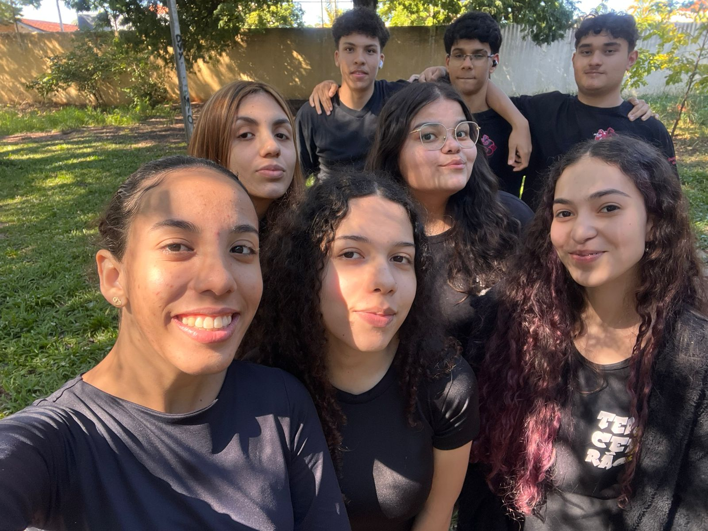

Conheça a história, o propósito e as mentes dedicadas por trás do projeto RoSus.
Muitas notícias nos mostram que as práticas agroindustriais causam algumas consequências na economia, na sociedade e principalmente no meio ambiente. Então decidimos criar um site para ensinar e mostrar a importância da preservação e do cuidado com os recursos naturais.
